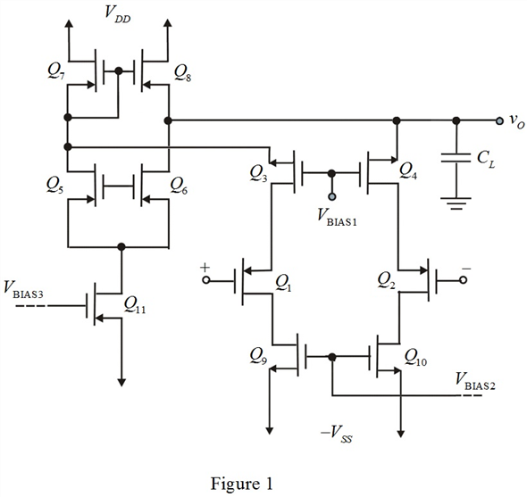

Refer to Figure 12.9 for a complete circuit of the folded-cascade operation amplifier.
For the complementary circuit of Figure 12.9, simply invert the circuit relative to the supply voltages and reverse all arrows of FET’s.
Draw the complementary circuit of Figure 12.9, which uses an input p-channel differential pair.

Thus, the complementary circuit which uses an input p-channel differential pair is drawn as shown in Figure 1.